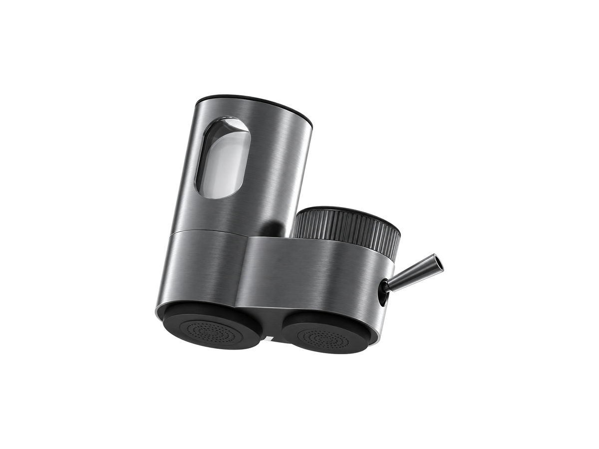

Для крана
Для кранаRP-F01
Классический фильтр для крана
SKU: RP-F01
MOQ: уточняйте при запросе
Главная/Продукция/Фильтры для крана/ RP-F02

Фильтры для крана
Поворотный кран-фильтр 360° (SG-LT-18) — семь вариантов. RP-F02 возглавляет семейство.
RP-F02, RP-F03, RP-F04 и RP-F05 — первые четыре варианта одного кран-фильтра с общим корпусом из ABS и формой. Они различаются углом поворота, турбинным LED, сердечником клапана и переключением: RP-F02 — поворот 360°, керамика + GAC / CTO / UF + GAC; RP-F03 — добавляет кольцо синей подсветки со светодиодом на водяной турбине, керамика + GAC / CTO; RP-F04 — поворот 270°, керамический сердечник клапана, турбинный LED (SG-LT-27); RP-F05 — керамический сердечник клапана, переключение кнопкой PUSH. К семейству присоединяются ещё три варианта: белый капсульный очиститель для крана (5-ступенчатая фильтрация, 1 блок + 4 картриджа, 145,7 × 66 × 67 мм), тонкий вариант с золотой отделкой и синей подсветкой и вариант из нержавеющей стали с прозрачным смотровым окном (2,5 л/мин, номинальный объём очищенной воды 2000 л, 144 × 114 × 59 мм). Спецификации подтверждаются для каждой модели и заказа.
Опции регулировки и отделки подтверждаются при заказе.
Напряжение / частота настраиваются под страну назначения. Другие конфигурации подтверждаются для каждого заказа.
RP-F02 — семейство кран-фильтров, которое устанавливается на кухонный кран и фильтрует воду в точке использования. Семь вариантов объединены одной идеей и различаются поворотом, картриджем, клапаном и переключением, поэтому бренд может предложить небольшую линейку из одного семейства. Стандартный вариант предлагает картриджи керамика + GAC, CTO и UF + GAC, а в семейство также входят вариант с 5-ступенчатой капсулой и вариант из нержавеющей стали с прозрачным смотровым окном. Сделано для владельцев брендов, которым нужна линейка кран-фильтров, легко вписывающаяся в кухонную линейку.
Каков минимальный объём заказа?
Первый заказ — 200 единиц на модель, повторные заказы — 500 единиц.
Можно ли заказать образец до оптового заказа?
Да. Образцы готовы через 15 дней, стоимость образца возвращается при первом оптовом заказе. Оптовые заказы занимают 40 дней после утверждения образца и отгружаются FOB Шэньчжэнь.
Какой вариант мне заказать?
Указывать при заказе как RP-F02 и назвать вариант: стандарт 360°, турбинный LED, керамический клапан 270°, кнопка PUSH, белая капсула, тонкий золотой или окно из нержавеющей стали.
Семь вариантов — указывать при заказе как RP-F02 и назвать вариант (стандарт 360°, турбинный LED, керамический клапан 270°, кнопка PUSH, белая капсула, тонкий золотой или окно из нержавеющей стали).
Наведите курсор на изображение варианта, чтобы увидеть его спецификации. На сенсорных экранах коснитесь изображения.



Седьмой вариант — тонкий корпус, золотая отделка с синей подсветкой — приведён в сравнительной таблице ниже. Чистого фото продукта пока нет, поэтому изображение здесь не показано.
Полные характеристики каждого варианта — рядом. В таблице ниже приведены значения RP-F02.
| Спецификация | RP-F02-1 — стандарт 360° (SG-LT-18) | RP-F02-2 — турбинный LED (SG-LT-18F) | RP-F02-3 — керамический клапан 270° (SG-LT-27) | RP-F02-4 — кнопка PUSH (SG-LT-18A) | RP-F02-5 — вариант с белой капсулой (MJLTJSQDB01) | RP-F02-6 — тонкий золотой (SG-LT-18F) | RP-F02-7 — вариант из нержавеющей стали с окном (SG-LT-17B) |
|---|---|---|---|---|---|---|---|
| Корпус | ABS | ABS | ABS | ABS | Подтверждается по заказу | ABS | Нержавеющая сталь |
| Варианты картриджей | Керамика + GAC / CTO / UF + GAC | Керамика + GAC / CTO | Керамика + GAC / CTO | Керамика + GAC / CTO / UF + GAC | 5-ступенчатая фильтрация, 1 блок + 4 картриджа; йодное число активированного угля ≥1000 mg/g | Керамика + GAC / CTO / UF + GAC | Керамика + GAC / CTO / UF + GAC; семиступенчатая фильтрация |
| Регулировка | Поворот на 360° | Поворот на 360° | Поворот на 270° | Подтверждается по заказу | Подтверждается по заказу | Поворот на 360° | Подтверждается по заказу |
| Опция LED | — | Светодиод с водяной турбиной | Светодиод с водяной турбиной | — | — | Синяя подсветка (как в каталоге) | — |
| Сердечник клапана | Подтверждается по заказу | Подтверждается по заказу | Керамика | Керамика | Подтверждается по заказу | Подтверждается по заказу | Подтверждается по заказу |
| Переключение | Рычаг | Рычаг | Рычаг | Кнопка PUSH | Подтверждается по заказу | Подтверждается по заказу | Рычаг (режимы исходной / очищенной воды) |
| Источник воды | Муниципальная водопроводная вода | Муниципальная водопроводная вода | Муниципальная водопроводная вода | Муниципальная водопроводная вода | Муниципальная водопроводная вода | Муниципальная водопроводная вода | Муниципальная водопроводная вода |
| Расход чистой воды | Подтверждается по заказу | Подтверждается по заказу | Подтверждается по заказу | Подтверждается по заказу | Подтверждается по заказу | Подтверждается по заказу | 2.5 L/min |
| Номинальный объём очищенной воды | Подтверждается по заказу | Подтверждается по заказу | Подтверждается по заказу | Подтверждается по заказу | Подтверждается по заказу | Подтверждается по заказу | 2000 L |
| Размеры | Подтверждается по заказу | Подтверждается по заказу | Подтверждается по заказу | Подтверждается по заказу | 145.7 × 66 × 67 mm | Подтверждается по заказу | 144 × 114 × 59 mm |
| Рабочее давление | Подтверждается по заказу | Подтверждается по заказу | Подтверждается по заказу | Подтверждается по заказу | 0.1–0.4 MPa | Подтверждается по заказу | 0.1–0.4 MPa |
| Температура воды | Подтверждается по заказу | Подтверждается по заказу | Подтверждается по заказу | Подтверждается по заказу | 5–38°C | Подтверждается по заказу | 5–38°C |
8 строк спецификаций из каталога ROPureOEM.
| Корпус | ABS |
|---|---|
| Варианты картриджей | Керамика + GAC / CTO / UF + GAC |
| Регулировка | Поворот на 360° |
| Источник воды | Муниципальная водопроводная вода |
| Номинальный расход / производительность | Подтверждается по заказу |
| Точность фильтрации | Подтверждается по заказу |
| Давление / температура | Подтверждается по заказу |
| Срок службы картриджа / размеры | Подтверждается по заказу |
Спецификации взяты из каталога ROPureOEM. Если значение ещё не подтверждено, оно указано как «Подтверждается при заказе» — мы не публикуем неподтверждённые цифры.
Для кранаКлассический фильтр для крана
SKU: RP-F01
MOQ: уточняйте при запросе
 Для крана
Для кранаФильтр для крана из углеродного волокна
SKU: RP-F06
MOQ: уточняйте при запросе
 Для крана
Для кранаФильтр для крана с индикатором ресурса фильтра
SKU: RP-F08
MOQ: уточняйте при запросе
 Для крана
Для кранаФильтр для крана — встроенный
SKU: RP-F10
MOQ: уточняйте при запросе